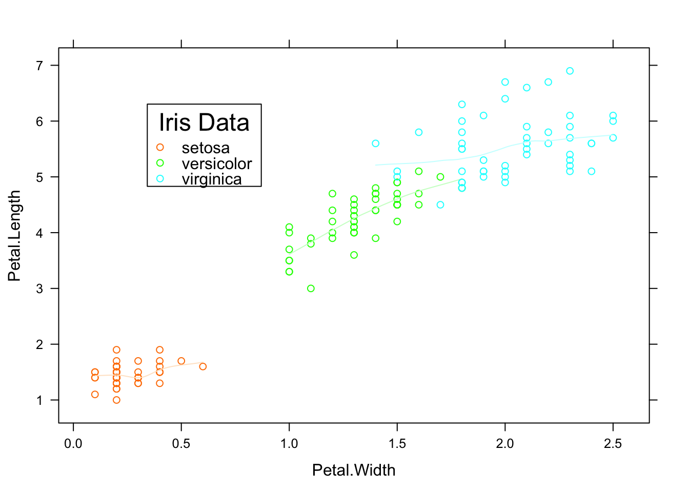
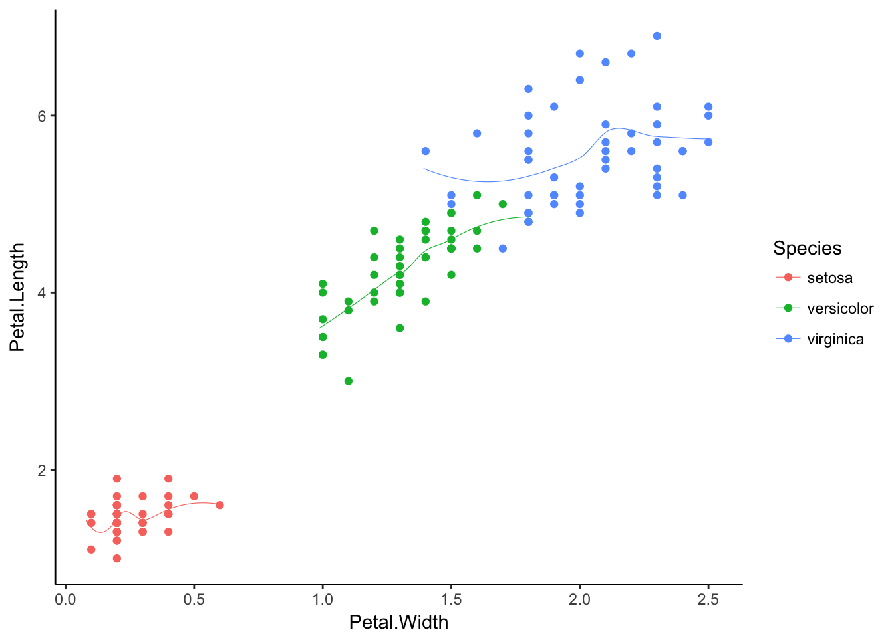

Chapter 2 a less simple scatterplot
2.1 iris data
2.2 iris data

Figure 2.1: Iris Petal and Sepal
2.3 lattice
xyplot(Petal.Length~Petal.Width, data = iris, groups=Species,
panel = panel.superpose, type = c("p", "smooth"), span=.75,
col.line = trellis.par.get("strip.background")$col,
col.symbol = trellis.par.get("strip.shingle")$col,
key = list(title="Iris Data", x=.15, y=.85, corner=c(0,1), border=TRUE,
points = list(col=trellis.par.get("strip.shingle")$col[1:3],
pch = trellis.par.get("superpose.symbol")$pch[1:3],
cex = trellis.par.get("superpose.symbol")$cex[1:3]),
text = list(levels(iris$Species))))
2.4 the same with ggplot
ggplot(data=iris, aes(x=Petal.Width, y=Petal.Length, color=Species)) +
geom_point() +
stat_smooth(aes(jitter(Petal.Width), jitter(Petal.Length)), size=.2, se=F) +
theme_classic()#> `geom_smooth()` using method = 'loess'
That leads over to ggplot chapter.